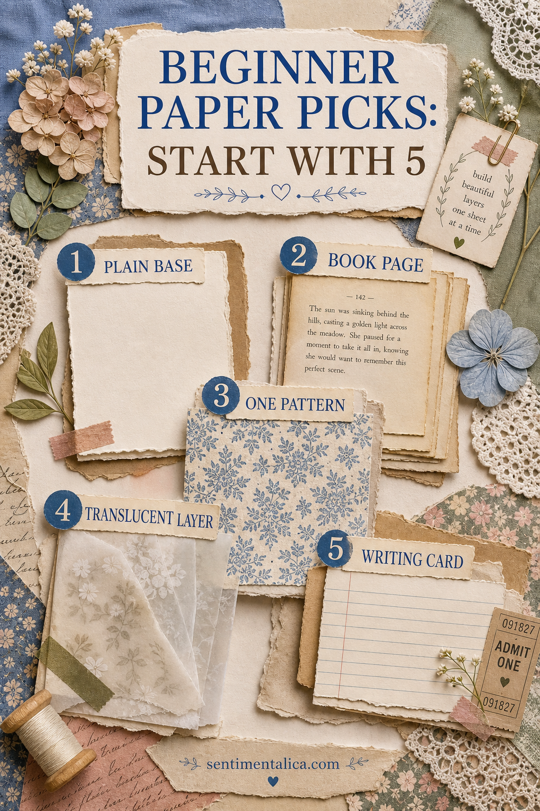
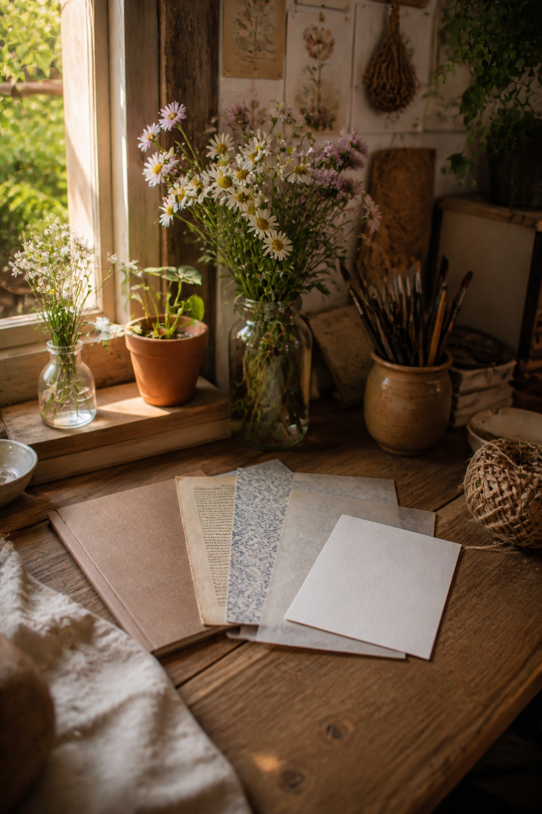

You do not need a room full of paper to begin junk journaling. Five paper jobs are enough to make layered pages that still leave space for your own words.

One plain base
Start with cream, kraft, or lightly tea-stained paper. It should be strong enough to support a few layers and quiet enough to write on. Plain paper gives patterned pieces somewhere to rest.
One old book page
Use a damaged book destined for reuse, a photocopy, or a printable text page. Tear a narrow section rather than covering the whole spread. Check that no visible sentence distracts from your memory.
One pattern
Choose a small floral, stripe, check, or faded geometric print in two or three colors. Cut one medium piece and save the offcuts for tabs. One repeated pattern can connect several pages.

One translucent layer
Tracing paper, glassine, or thin tissue softens a strong image and adds depth without heaviness. Attach it at one edge, tuck it under a label, or turn it into a small flap.
One writing card
Keep a stack of plain cards or cut them from sturdy paper. A writing card protects space for dates, names, lists, and stories. It can sit openly on the page or slip into a pocket.
Choose a simple color relationship
Let the base and writing card stay neutral. Pull one color from the patterned paper for a tiny tab or thread. The book page and translucent layer then act as texture rather than additional competing colors.
Store the five together
Make a starter envelope with several pieces from each group. When you sit down, choose one from every job and return the rest. Limiting the first decision leaves more attention for arranging and writing.
Test paper direction
Gently bend a sheet both ways before folding it. Many papers fold more cleanly in one direction because of their grain. For a base or pocket, place the easier bend where the page needs to turn. This reduces cracked edges and stiff folds.
Check what your pen can handle
Try pencil, ballpoint, and your favorite ink on a corner or offcut. Glossy packaging may smear, and very absorbent book paper may feather. Reserve reliable writing cards for the words that matter and let difficult surfaces serve as decorative layers.
Use copies for precious material
Do not cut an irreplaceable letter, photograph, or valuable book because junk journaling welcomes old paper. Scan it and work with a copy. Ordinary packaging and discarded pages are excellent learning materials because you can experiment without regret.
Make one spread before buying more
Use all five paper jobs on a single page, then notice which material you enjoyed handling. Did translucent paper delight you, or did you prefer sturdy cards? Let that answer guide the next small purchase rather than a generic supply list.
As you learn what you enjoy, expand only the category you genuinely use. Your collection should grow from making, not from the fear that you are missing a necessary supply.
Image note: Some visuals in this article were created with AI and curated by Sentimentalica.